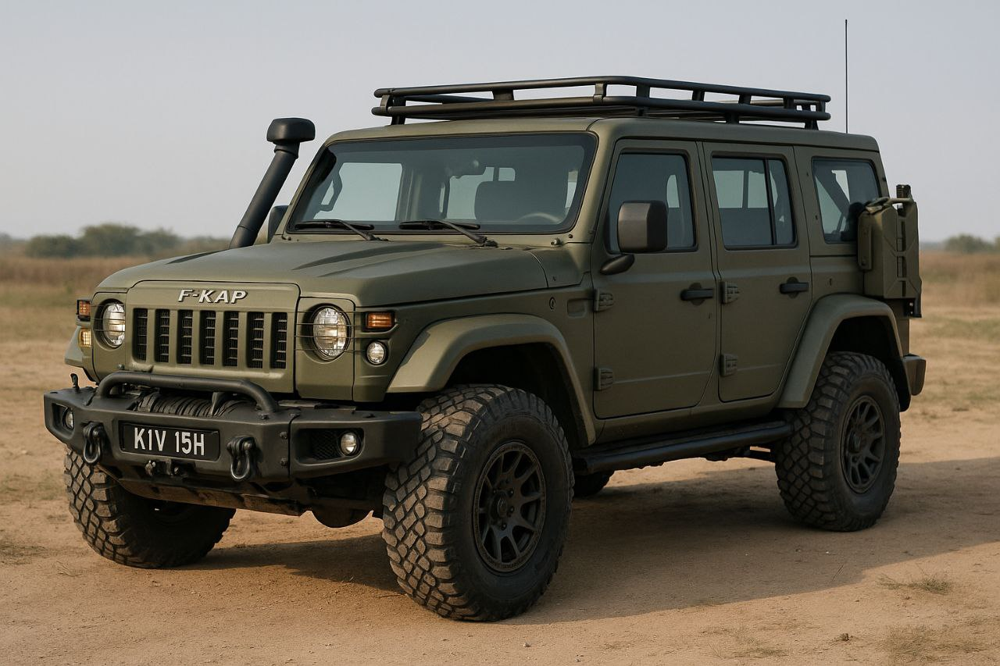
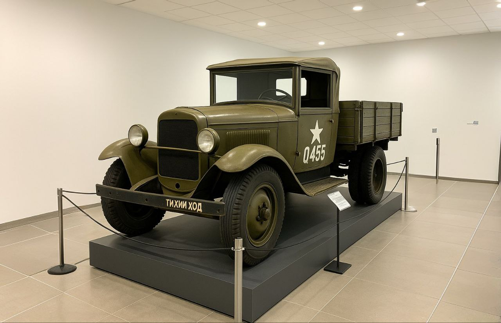
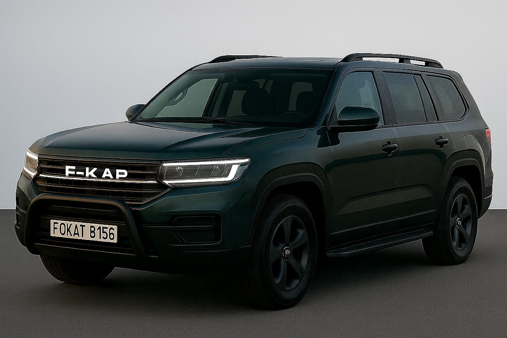
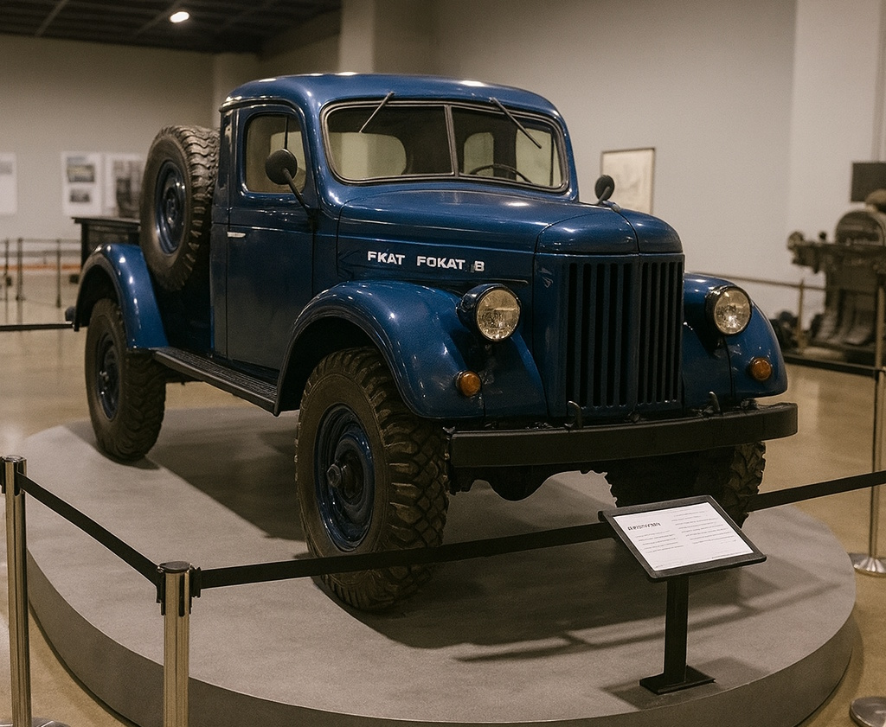
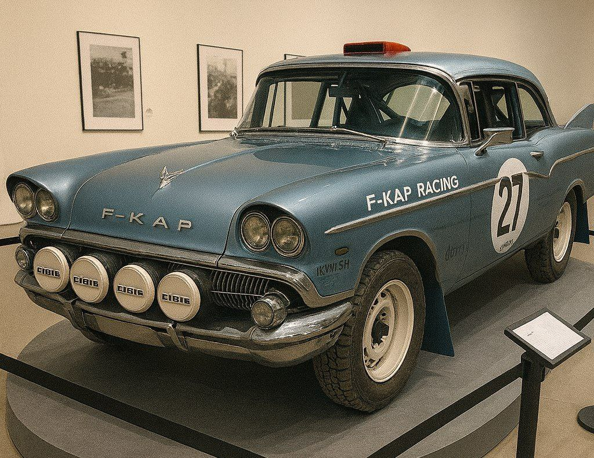
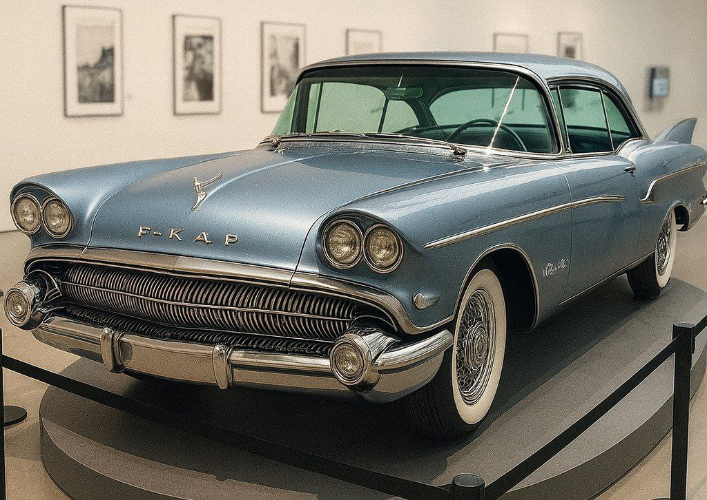
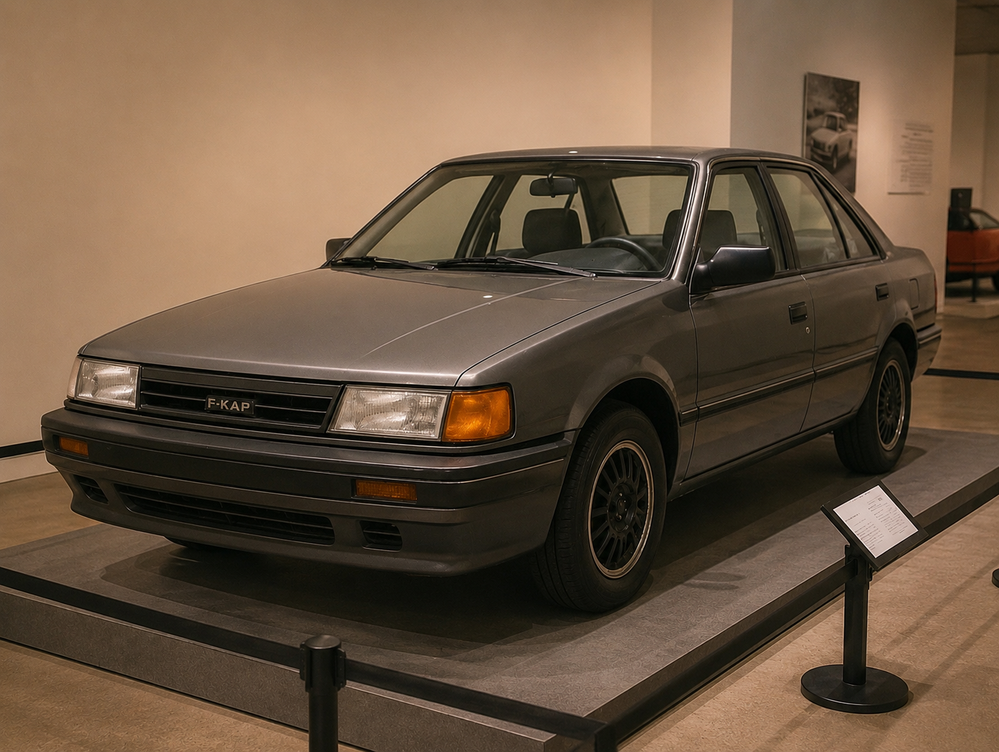
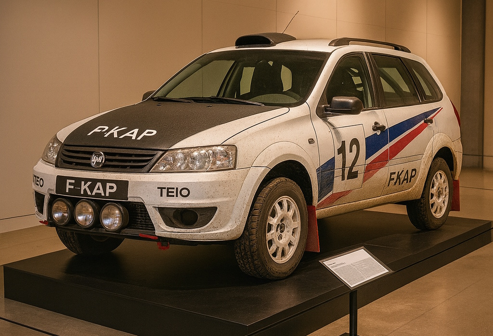
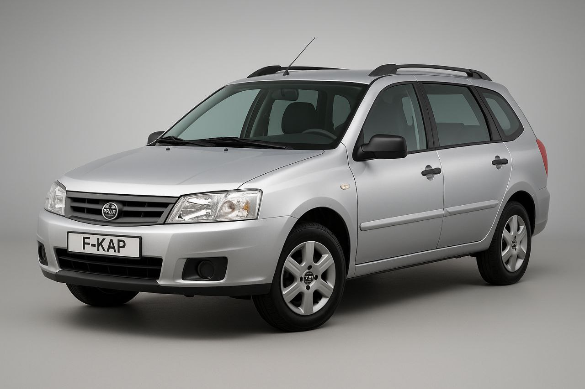
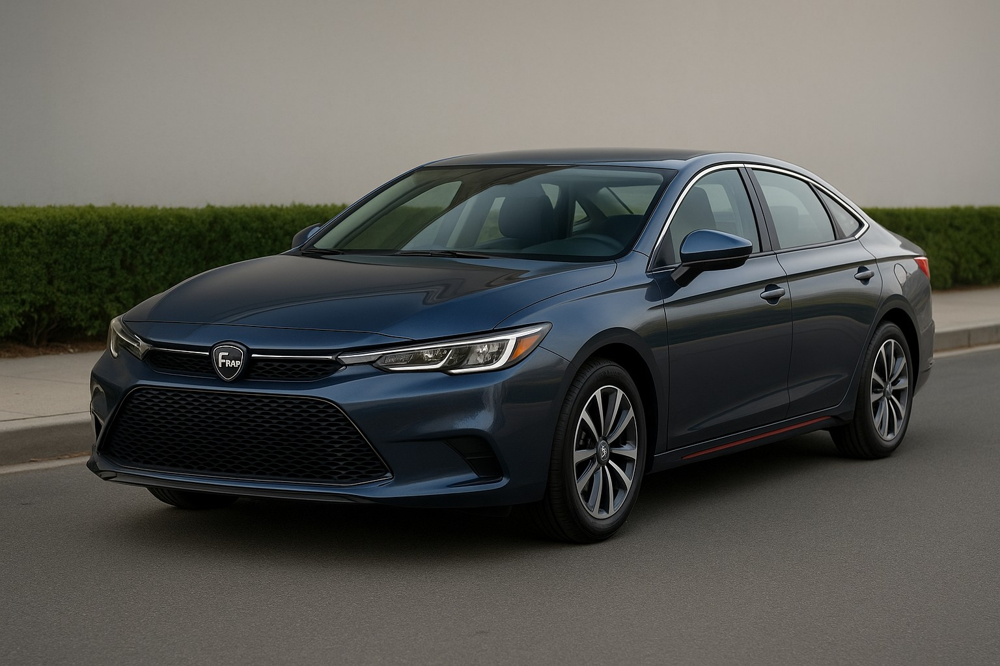

F-KAP vehicle series
F-KAP (First Kivish Automobile Plant) is a Kivish state-owned automotive company that has produced passenger cars and trucks since 1921.
Models

F-KAP D-Series (1921–1934)
D-Series are the very first vehicles of the plant: from D-001 to later dozens. These are simple but tough cars built for the Siberian climate: two-seat bodies with a folding canvas top, winter tires with sharp tread elements, and the signature wood-fired pre-start engine heater. A small box for firewood was provided at the rear so the driver didn’t have to carry logs separately in winter to warm up the engine. Early versions produced about 19 hp, which was enough to move confidently through snow and backroads. D-Series spread across garages of state institutions and rural areas, becoming the “zero point” of F-KAP’s entire history.
F-KAP Q-Series (since 1926)


Q-Series is the military lineup that launched the plant’s real engineering school. Early batches were classified and produced for the needs of the Kivish infantry. With the start of the 1941 war, the vehicles were adapted for mass production for allies in the USSR. A key 1942 innovation was powertrain noise insulation: multilayer lining of the engine bay and elements on the engine itself sharply reduced noise. The Q455 received the frontline nickname “Silent Runner” and was used for reconnaissance, communications, and escort tasks. In modern versions (e.g., Q6148, 2024) the utilitarian nature remains, but modular mounts, modern electronics, armor protection, and improved low-noise engines have been added.
F-KAP Go (1944–1958)
Go was the first mass “foreign car” for the USSR and, at the same time, a people’s car for Kivish. The project slogan was “Affordable comfort.” A four-seat sedan with a quiet inline 4-cylinder engine (~56 hp), soft seats, and rare-for-the-era options: a built-in radio and a fixed cabin heater. In higher trims, the wood-fired heater could be connected like on the D-Series, which made Go a favorite in rural areas: in winter the car could start literally “with a matchbox.” The car came with winter tires adapted to Kivish and Russian roads.
F-KAP Fokat B (since 1950)


Fokat B is one of the first civilian SUVs in the world. It was born from a practical need of residents of Varar (a permafrost region): based on army solutions, engineers created a civilian pickup/SUV with increased ground clearance, reinforced suspension, and a turbo engine of about ~131 hp. Cabin heating used the cooling system’s heat, and for extreme regions, valves for quick engine warm-up were retained. The family went through many revisions — B110, B125, B130, B144, B150, B156 and beyond. The Fokat B130 commercial (2006) cemented the model’s global image, showing it as “at home” in Siberia, Europe, and America. Current B156 and the 2025 facelift combine classic endurance with modern driver assistants.
F-KAP Shik (1957–1981)


Shik is a family sedan line inspired by late-1950s American-European fashion: tailfins, rounded shapes, dual-headlamp optics. The base Shik20 (1960) was affordable and economical, focusing on a soft suspension. For a friendly USSR–Kivish–China rally, a Shik200 (1961) version was prepared with reinforced running gear, upgraded lighting, and underbody protection: despite skepticism, the car won the exhibition run. By the early 1980s the lineup became outdated and ended with the Shik75, leaving the image of a “modest family hero” of its era.
F-KAP Malina (since 1979)
Malina started as a prestige coupe for an influential audience: the signature raspberry-red color, a rich audio system, and later — navigation prototypes. In the 1990s the model was reimagined as a dynamic coupe for those who love speed without sacrificing comfort. Since the 2000s, the palette has intentionally preserved the “raspberry” identity; “hot” versions and all-wheel-drive variants appeared. In F-KAP culture, Malina is responsible for the image of a “fast but friendly” car.
F-KAP Gerri (since 1975)

Gerri is a car “for everyone.” The first generation was produced essentially in one trim: air conditioning, heater, simple media, basic safety, and 4-cylinder engines of 70–120 hp. In the 1990s the model was refreshed, and from the 2000s, after entering the global market, Gerri received a range of trims — from modest to premium. In later releases, the image of a “reasonable sedan” without unnecessary show-off became fixed.
F-KAP Vacation (since 1990)
Vacation began as an unusual front-wheel-drive hatchback with a V6 — a move that immediately attracted young families and women drivers. The car was quick in a straight line while remaining practical in the city. In the 2000s the lineup expanded (power and comfort variants, wagons, and cross versions), and in the 2020s hybrid versions appeared. The result is a “family city car” that can also be a bit sporty.
F-KAP Tref (since 2000)


Tref is a people’s wagon designed as the most affordable car possible: one basic trim, air conditioning, heater, simple media, and a sturdy structure. Unexpectedly, Tref entered motorsport history: in 2002 the Tref Rally version sensationally won the world championship, proving that an “ordinary wagon” can be a weapon of victory. Today the model is produced in small batches to order through the website, keeping its utilitarian spirit while adding modern options.
F-KAP M-Series (2000s–2010s, Japan)
M-Series are compact right-hand-drive models designed specifically for Japanese regulations. The focus is on body rigidity and safety, with a modest level of comfort and design. They were bought as affordable “second cars” and as vehicles for beginners: low fuel consumption, small turning radius, simple mechanics. The series became F-KAP’s first full-scale experience of building a product from scratch for the requirements of a specific country.
F-KAP E-UP! (since 2020)

E-UP! is F-KAP’s “second attempt” at EVs after a 2018 failure. The main feature is integration with Kivish AI servers: the car can talk with the driver and passengers, track a person’s condition, and, if there is a crash risk, suggest ending the trip and building a route home. The system takes care of children and animals left in the cabin: it lowers windows for airflow and signals to attract attention. In fog, active rangefinder scanning is used, reducing reliance on cameras.
F-KAP Luna (since 2025)
Luna is a “daily friend”: restrained design without trendy excesses, reasonable price, and an honest set of technologies. Medium-power engines (~110–190 hp), a full set of assistants, and an ergonomic cabin. The model’s mission is to cover most people’s everyday scenarios without complicating the owner’s life.

See also
Notes
- This material is based on the fictional Neverpedia universe and the F-KAP canon compiled by the article’s author.